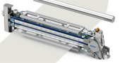

Поставка оборудования
для очистки поверхности и кромок
плитных материалов

 +7(495)706-54-89
+7(495)706-54-89
Оборудование Wandres
Фирма Wandres выпускает следующую продукцию:
— Шверт-щетки для чистки плитных материалов Идеальная система для чистки ровных поверхностей, таких как мебельные и пластиковые плит, металлических пластин, или поверхностей цилиндров.Поверхности панелей можно очистить от мелких частиц или пыли с одной или двух сторон посредством шверт-щеток.
— Комбинированная система шверт-щеток Una X Комбинированная система шверт-щеток Una X подходит для чистки ровных поверхностей и плитных материалов. Его регулируемая рама позволяет вертикально перемещать шверт-щетки, т.е. адаптировать их к толщине материала вручную или, как опция при помощи электро-пневматической системы регулировки высоты.

— Торнадо канал Торнадо канал идеальная система для вспомогательной очистки плоских поверхностей, таких как мебельные плиты с желобками, створками или сквозными отверстиями. Воздушная струя, произведенная или вращающимися Торнадо форсунками или фиксированными форсунками полной мощности, активно удаляет мусор с различных поверхностей.
— Предварительная вспомогательная воздушная система очистки Различные чистящие модули воздушной чистки могут быть вмонтированы в систему подачи Шверт-Щеток для предварительной очистки. Эти модули эффективно удаляют большое количество мусора с поверхности материалов, из глухих отверстий, желобков, рассверленных отверстий при помощи сложной вентиляционной технологии.
— Роботизированная Шверт-Щетка BIR Роботизорованная Шверт-Щетка идеально чистит сложные компоненты с выгнутыми и вогнутыми поверхностями, такими как корпуса автомобилей, пластиковые фасонные изделия (бамперы или каркасы) перед лакировкой, покраской или ламинированием.

— Web Шверт-Щетка для материала и пленки WB
Web Шверт-Щетка идеальна для чистки быстро двигающихся материалов перед печатью, ламинированием или
переработкой или после продольной резки или обрезки. Это чистящее устройство может быть использовано как
для
бумажных, так и для картонных материалов, а также для тонких пластиковых пленок.
— Чистящая машина «Cevomat» CVO
Предназначена специально для двойной чистки стальных лент перед прокаткой при изготовлении
высококачественной стали, при структурной вальцовке, при рихтовочной вальцовке и т. п.
— Чистящая машина Evomat EVO
Чистящая машина Evomat EVO подходит для двусторонней чистки оцинкованных пластин, сваренных или
алюминиевых
пластин перед формовкой.
— Чистящая машина CF
Чистящая машина CF идеальна для двусторонней чистки плоских поверхностей: ламинатов, панелей, пластиков,
профильных панелей. Клинер имеет собственную транспортную систему.
— Отсасывающие пистолеты, мощные пылесосы Являются универсальными помощниками при монтаже и работах по техобслуживанию.
Комбинация воздушной очистки и очистки шверт-щеткой обеспечивает высокое качество поверхности при изготовлении компонентов мебели, ДСП, панелей для настила полов. Для улучшения очистки применяется запатентованная антистатическая жидкость Ingromat®, связывающая пыль и уменьшающая электростатический заряд.